Nintendo Adventure Books #5: Pipe Down! Guide
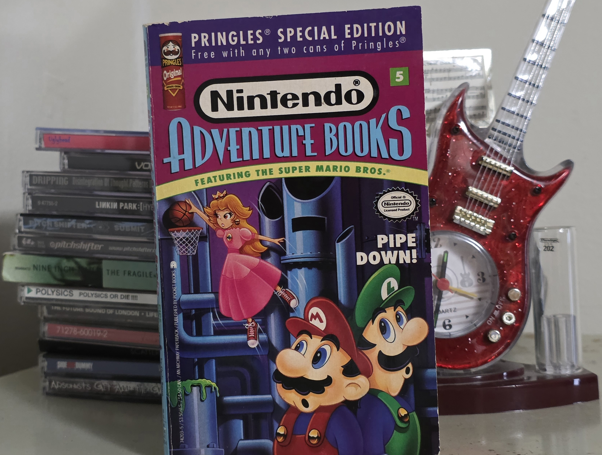
Intro: This is the fifth book in the series by Clyde Bosco again. Mario and Luigi track down the princess after a pair of basketball shoes take her away from her own birthday party. This guide is adapted from a hand written draft I completed around 8/18/19. As usual, use F3 to navigate and look back on the portal page for how this works. For errors contact me with the links at the bottom of the site’s homepage. Enjoy!
The guide was created by Amia J. Moore/ C. Mechayoshi. It may not be copied without permission.
New: use side nav to jump around super quick. It is not meant to represent every page in the book. Click for bigger images.
Stats:
- Chapters: Sixty-Two
- Items: Cowboy boots, Wading boots, Army boots, Basketball, Starman, Noise maker (not shown), Balloon (not shown)
- Endings: Six
- Maximum coins: Easily obtainable from winning. See ‘Optimal path’ below.
- Errors: Some vague moments in some puzzles, see below, but nothing major
START Chapter 1, Page 1: Peach has a birthday party with lots of shoes given out. (Women and shoes I think was the joke. I’m not really laughing though.) It’s her 99th birthday in, er, 'fungus years' and the Mario Brothers and else are attending. Use the puzzle on page four to grab an extra gift.
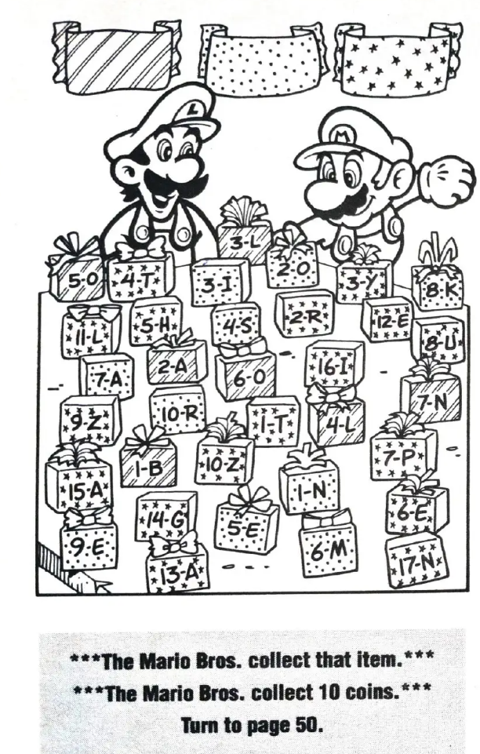
Reward: ten coins, the balloon OR noisemaker
Splits: page 50
Path: -
Puzzle solution: Choose a pattern of gift wrap. Star options says: “try the puzzle again”. Dotted options: “noise maker”. The Stripes: “Balloon”. Please try to get the noise maker, optimal for a roadblock later.
Page 5 Chapter 2: Mario bros get lost, then dig up through the ground and right back into the Mushroom Kingdom. Dirtied up, they head back to the palace.
Splits: page 112
Path: from page 44
Page 7 Chapter 3: The plumbers reach a three way junction. Which way to go?
Splits: Page 108 (has basketball), page 100 (climb to left pipe), page 92 (enter pipe), page 39 (climb to right pipe)
Path: from page 92
Puzzle solution: You have an auto-win with the basketball from page one-hundred and eight, otherwise it’s a guess between right, left, and center. We can eliminate the center path on page ninety-two because logically we just came from there. Go ‘right’ on page thirty-nine for a huge coin reward. Definitely avoid ‘left’ on page one-hundred!
Page 8 Chapter 4: Duchess Puffball’s army boots come to life and await further orders, but that doesn’t help.
Splits: page 42
Path: from page 120
Page 9 Chapter 5: Mario pulls the flower level, matching three crown symbols for the jackpot. Mario pockets the prizes while Luigi has a go at the levers again. Use the puzzle carefully.
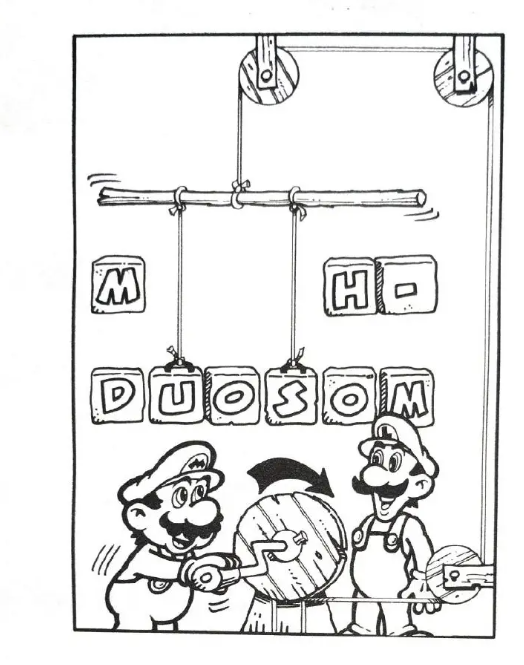
Reward: one-hundred coins, Starman
Splits: page 33 (pull mushroom level), page 73 (pull star level)
Path: from page 103
Puzzle solution: Be careful with the mental calculations. It spells out ‘mushDOOM’ so don’t touch the mushroom lever. Pull the star on page seventy-three.
Page 12 Chapter 6: With zero shame, the Mario brothers run and the crab starts to catch up. Should you toss some coins to slow it down?
Splits: page 54 (give way your >5 coins), page 17 (don’t hand over money)
Path: from page 62, page 118
Puzzle solution: Cough it up or else! Go to page fifty-four.
Page 13 Chapter 7: They keep mad dashing after Peach until tweeter birds attack. Use the puzzle.
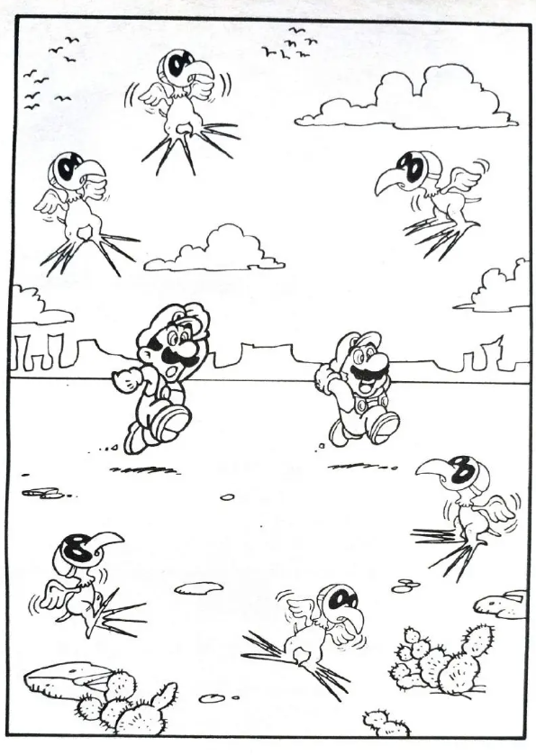
Splits: page 65 (the lines tough Mario bros), page 115 (no lines touch Mario bros)
Path: from page 86
Puzzle solution: Choose four birds and if their weird pointy toes point towards either Mario bro, you’re out! The birds that are safe are the bottom three and the top most one.
Page 16 Chapter 8: Ludwig plays again and the brothers dance against their will.
Slits: page 84 (use Starman), page 32 (no Starman)
Path: from page 55
Puzzle solution: Use your Starman here or else on eighty-four.
Page 17 Chapter 9: Well..
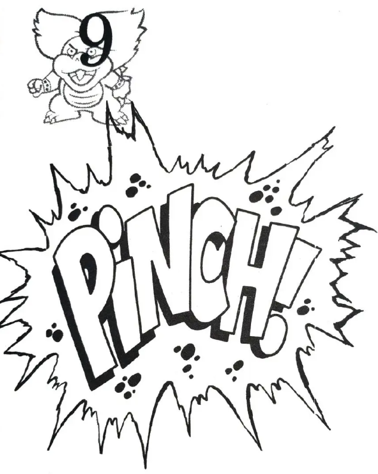
Page 18 Chapter 10: Ludwig beats the Mario brothers with bagpipes, bashing them over the head brutally! This won’t go well.
Splits: page 38
Path: from page 66
Page 19 Chapter 11: They dash into the opening near the organ but then lost and quickly trapped by Ludwig. Use the puzzle.
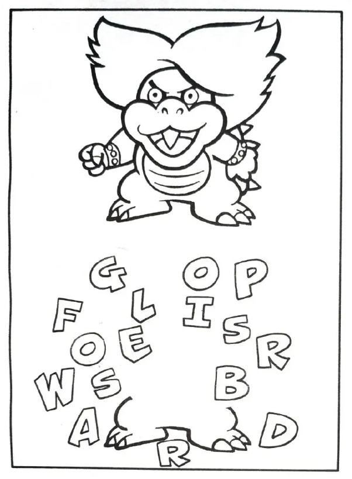
Splits: page 66 (charge Ludwig), page 24 (run away)
Path: from page 56, page 90
Puzzle solution: Match Ludwig’s outline to the bottom group of letters. Yes, I actually traced a cutout to do this because trying to eyeball it is tough. It will say something like ‘forward’. Go to sixty-six to avoid losing a bunch of coins.
Page 22 Chapter 12: Luigi can pick a lock but its the wrong door! Bowling balls tumble out and that’s bad for several reasons other than the knots on your forehead..
Buffet: loose all items and coins
Split: page 34
Path: from page 96
Puzzle solution: Since you have not had the opportunity to obtain boots, the only danger is that you’ve lost your party favor and coins, both of which have to do with a later event. Thankfully there is an opportunity to gain more coins before then, but the items from the opening puzzle and the basketball are gone forever.
Page 24 Chapter 13: Cornered, all they can use is a jukebox Ludwig forgot he had back there with a hefty fee of fifty coins. Are your pockets deep enough?
Splits: page 82 (you have ≥ fifty coins), page 38 (you have < fifty coins)
Path: from page 19
Puzzle solution: If you missed page one-hundred three’s ‘petal power’ puzzle and scored low on page thirty-nine's pipe maze, along with other hazards, that's unfortunate. You need to use that jukebox!
Page 26 Chapter 14: Luigi takes the cowboy boots even if they don’t know why, but you should know why so good for you! Then they take to the vents.
Reward: Cowboy boots
Splits: page 62
Path: from page 36
Page 28 Chapter 15: The Mario bros crash into a mound of crumpled paper balls, Ludwig von Koopa’s rejected music sheets. He’s staging a rehearsal, forcing Peach to dance to the terrible music of his latest ballet, “Dribbling Beauty". Solve the puzzle.
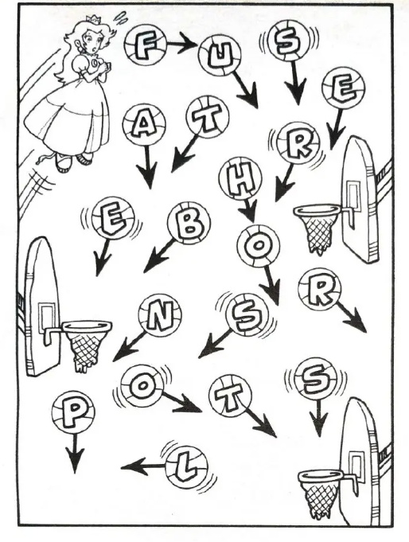
Splits: page 60 (attack Ludwig), page 120 (open box of boots), page 42 (wait and watch performance)
Path: from page 39
Puzzle solution: It’s easy to eyeball if the basketballs will fall in the hoops, so do that. ‘Use the boots’ will be the message. Page sixty will lose your Starman and coins, so if you don’t have the boots go to page forty-two. You will miss a hazard that can bite you later.
Page 32 Chapter 16: With nothing to help, the Mario bros are forced to keep dancing until their next break in… four years!
Game over
Path: from page 16
Page 33 Chapter 17: Mario loses the slots, unleashing a trap door of things to fall on him. Not good.
Splits: page 65
Path: from page 103, page 9
Page 34 Chapter 18: They enter the shoe vault. Use the puzzle for.. not a hint exactly but something I guess.
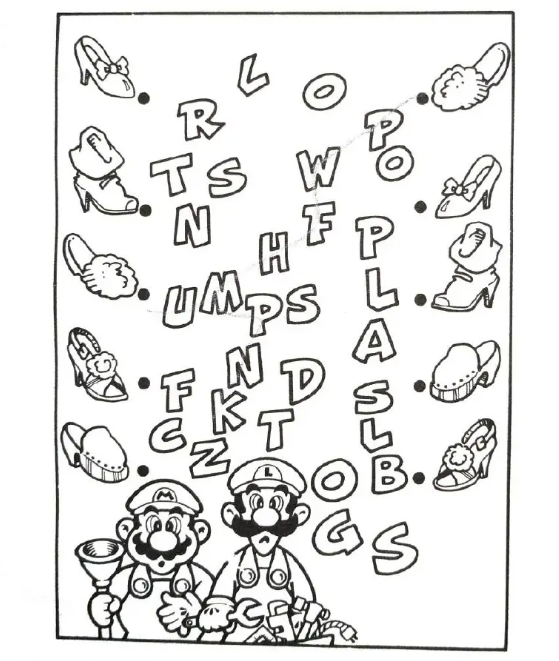
Splits: page 103
Path: from page 44, page 96, page 22
Puzzle solution: “Why is Princess Toadstool’s shoe vault like Mario and Luigi’s job? ...Lots of pumps and clogs.” Yeah, a doozy for sure! Interestingly the book states ‘solve this puzzle (just for fun)’ so it acknowledges its uselessness.
Page 36 Chapter 19: The Marios find the boots but can only pick one pair from the cowboy boots, wadding boots, or army boots with no only one page offering a hint. Remember page seventy-nine? Take the cowboy boots on page twenty six.
Splits: page 26 (cowboy boots), page 106 (wading boots), page 48 (army boots)
Path: from page 73, page 88
Page 38 Chapter 20: Ludwig summons Tryclyde with a melody on his harmonica. The Marios are doomed, dragged to the snake’s layer.
Game over
Path: from page 24, page 18
Page 39 Chapter 21: Mario and Luigi jump into the pipe to the right. Some pipes contain visible coins and they smash one to get some. The realize that they are actually in a pipe organ. Hmm, who could the upcoming villain be? Other than the Koopaling with every chapter number printed on him.. Anyway a variable puzzle is ahead.
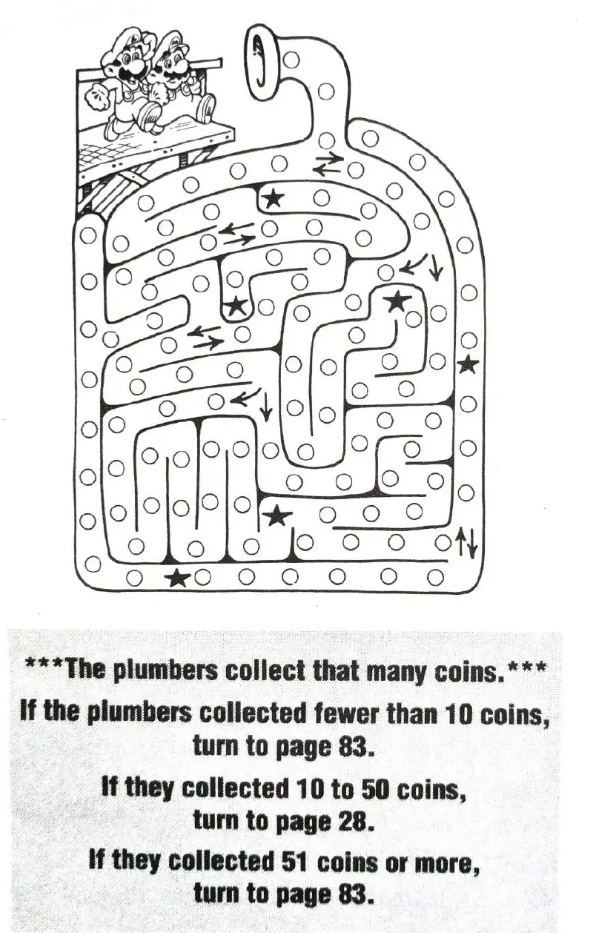
Reward: ten to fifty coins
Splits: page 83 (collect fewer than ten coins), page 28 (ten to fifty coins), page 83 (collected fifty-one or more, yes redundant)
Path: from page 7, page 108
Puzzle solution: Start at the top and work through until you reach a star. You will have ten to fifty coins but not more or less, because they lead to the same place, and know what that means. I topped out at forty-two, which the ‘optimal path’ below will reflect.
Page 42 Chapter 22: Ludwig finishes the music piece then knocks the brothers out. When they wake up they are in ballet slippers and tutus, like it or not with a force field keeping them put.
Splits: page 55
Path: from page 28, page 110, page 60, page 101, page 8
Page 44 Chapter 23: Mario and Luigi chase again. Luigi almost catches up before falling into a pit with Mario. They get on the move.
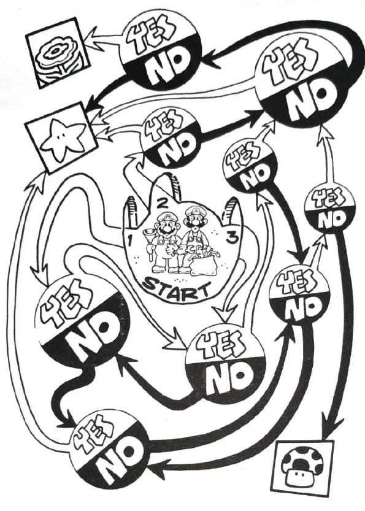
Splits: page 5 (mushroom), page 34 (fire flower), page 58 (Starman)
Path: from page 79
Puzzle solution: The Yes and No binary spots make me think of Book #1 Double Trouble's penny flips, but it's slightly more involved. Navigate based on whether the circle you encounter is the same size as your penny. Ah.. so you still need one of those. You want to choose tunnel two on page thirty-four.
Page 48 Chapter 24: Luigi snags the military boots which admittedly look the job, but are they??? No. Oops spoilers.. They leave from the vents.
Reward: Army boots
Splits: page 62
Path: from page 36
Page 50 Chapter 25: Peach gets some red shoes she loves, but who sent them? Soon they start thinking on their own and she advises the Mario bros to grab something out of her shoe vault before she’s whizzed away. Use the puzzle.
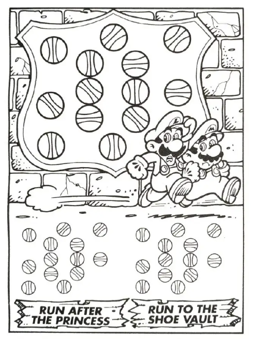
Splits: page 96 (shoe vault), page 86 (follow Peach)
Path: from page 1
Puzzle solution: See the matching group of basketballs. The correct option is ‘run after the princess’ on eighty-six, but if you know exactly what you’re going for the other route is more direct. See the optimal path.
Page 54 Chapter 26: The coins, five of them, stop the Clawgrip. Small price to pay for surviving!
Buffet: lose five coins
Splits: page 58
Path: from page 12
Page 55 Chapter 27: Ludwig announces the start of a nine year music tour around Dark Land. Hopefully you released those cowboy boots.
Splits: page 77 (release the cowboy boots!), page 16 (you don’t have the boots)
Path: from page 42
Page 56 Chapter 28: The piranha plant players drop the musician act to attack. Use the puzzle carefully.
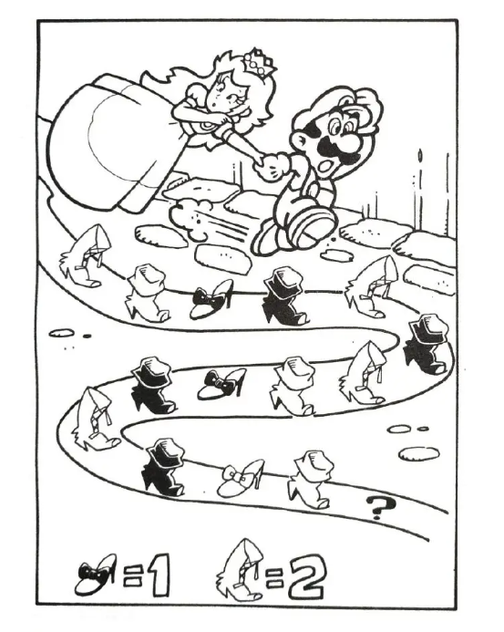
splits: page 90 (boot one), page 19 (boot two)
Path: from page 77
Puzzle solution: You look at the sequence to determine the next shoe. I found it tricky before I realized that both answers can work depending on if you are looking at the obvious color pattern or the less obvious (to my bad eyes) shoe type. The ninety path is used for speed, but the other works if you can solve puzzles correctly so.. idk?
Page 58 Chapter 29: In the tunnels they hear music while exploring paths. They’ve reached Pipe World which is quite far from World One unless the book tweaks the scale a bit. Keep moving.
Splits: page 92
Path: from page 44, page 114, page 54
Page 60 Chapter 30: The Mario bros charge but Ludwig uses weaponized acoustics to keep them off. Use the puzzle to know your next play.
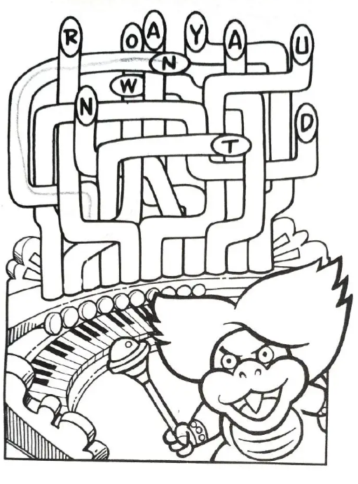
Buffet: lose ten coins, Starman
Splits: page 111 (keep going), page 42 (stop and watch the show)
Path: from page 28
Puzzle solution: Follow the organ pipes. It will say ‘Don’t run away’ somewhat vaguely. Your options in story are: ‘keep going’ or ‘stay and watch the show’, so they mean the latter. Do so on page forty-two.
Page 62 Chapter 31: Mario is like ‘screw the shoes’ (more or less) and they chase after the sounds again before reaching nasty sewer Clawgrip. Keep in mind that must hand ‘something’ over as a sign warns. Are you ‘feeling generous?’
Splits: page 114 (hand monster the boots OR noisemaker), page 118 (give monster the balloon), page 12 (be tight fisted, voluntarily or not)
Path: from page 88, page 26, page 106, page 48
Puzzle solution: The best thing to use is the noise maker. As a 'junk item' it has no other purpose in the book. The balloon is technically another, but go to page one-hundred eighteen and find out (don't). You can use the empty handed option on page twelve but you’ll eventually have to cough up some coins or else. Do not offer your boots of course unless you know you’ve chosen the wrong ones and is stuck in a ‘Shaggy dog’ route anyway.
Page 65 Chapter 32: Mario gets whacked in the head by a tweeter. He wakes up with Luigi dragging him back home to their plumber shop disgruntledly. His brother is vague on what exactly happened, appropriate because several scenarios can lead here.
Game over
Path: from page 13, page 33, page 111, page 72
Page 66 Chapter 33: Mario brothers will throw down tonight! Or they would if not for the puzzle..
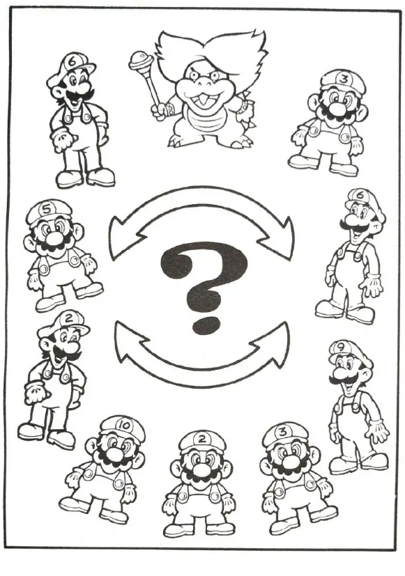
Splits: page 119 (land on Mario three times), page 18 (land on Luigi three times)
Path: from page 19
Puzzle solution: Follow the rules until you land on Mario or Luigi three times. You want to land on Mario one page one-hundred and nineteen.
Page 68 Chapter 34: Mario mistakes Shy Guy tracks for basketball prints because there hadn’t been enough Mario sports games at this point for him to distinguish. Well that’s my guess at least. They double back for the shoe vault.
Splits: page 112
Path: from page 115
Puzzle solution: Shaggy dog route!
Page 70 Chapter 35: Mario triggers what effectively becomes a reset bomb. A cyclone breaks out and next he knows he knows.. nothing, aside from the books earliest events.
Buffet: lose everything!
Splits: page 88
Path: from page 84
Puzzle solution: If you missed the correct boots or any boots at all, here is your ticket to the vault. Just remember that your inventory has been wiped clean so you will need to scrape up some coins for the Clawgrip and you cannot obtain the noisemaker again.
Page 72 Chapter 36: Mario hits the wrong key for sure, sending a nozzle of baddies on his head. Here we go again..
Splits: page 65
Path: from page 84
Page 73 Chapter 37: The elevator drops them deeper into the vault. There is a split so use the puzzle.
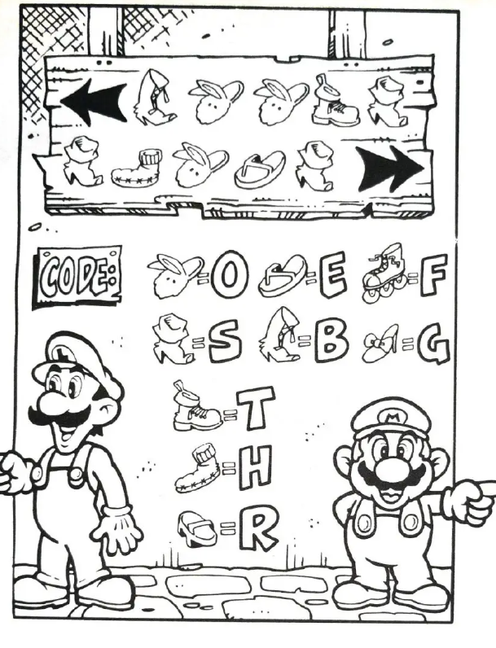
Splits: page 36 (go left), page 88 (go right)
Path: from page 103, page 9
Puzzle solution: The left is ‘boots’ and the right is ‘shoes’. There is no indication, or is there? If you got here from page seventy-nine (by making a lot of right choices), you will at least know that you targeting Queen Shiitake’s boots AND it’s cowboy related. That’s the only way to know this. The shoe path does give a brief option to check out the other door however, so you can still get to what you need.
Page 76 Chapter 38: The Mario’s break a pipes, making coins fall down on everything spectacularly. This time it’s not a bad thing like everything else in the book that falls on you.
Splits: page 93
Path: from page 90, page 82, page 119
Page 77 Chapter 39: The cowboy boots return with a vengeance, bringing along friends that stampede. In the chaos Mario and Luigi pull the Princess out of there.
Splits: page 56
Path: from page 55
Page 79 Chapter 40: They find Peach leaning against a rock and super tired. She inquires of boots, some special ones from her great grandmother Queen Shiitake but gets carried away again by the demented sneakers stuck on her feet before she can elaborate. Use the puzzle.
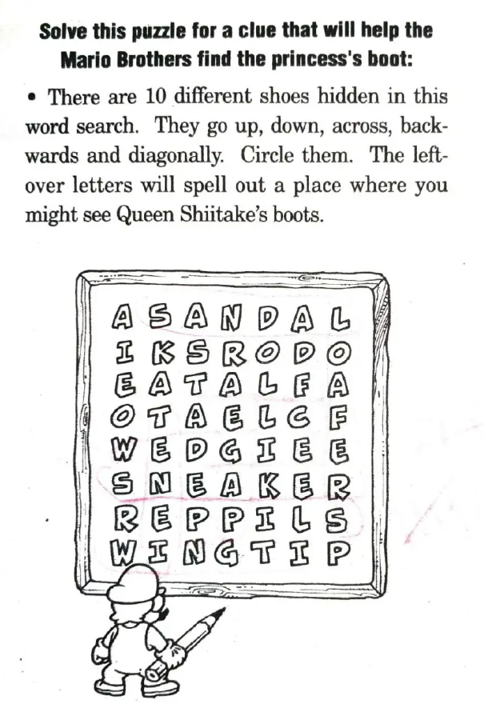
Splits: page 44
Path: from page 115
Puzzle solution: You must find the names of shoes, with no gosh darned word bank. (Grrr..) I only got “sandal”, “skate”, “loafers”, “flat”, “cleat”, “wedgie”, “sneakers”, “tiki”, and “wingtip”. Just know the answer is something with the word ‘rodeo’ in it. This is a big hint, so move on.
Page 82 Chapter 41: The jukebox blasts some rock and roll. Hear that booming bass?
Buffet: loose fifty coins
Splits: page 76
Path: from page 24
Page 83 Chapter 45: You can’t get this score page.
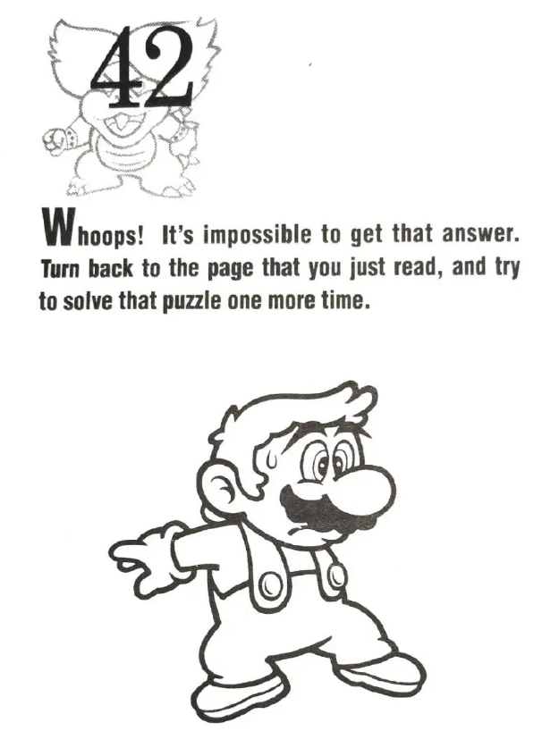
Page 84 Chapter 43: Mario grabs the Starman for a ‘clutch’ move. He reaches Ludwig’s controls on the organ but which to use?
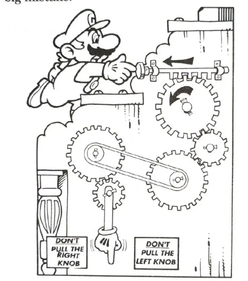
Splits: page 70 (pull left knob), page 72 (pull right knob)
Path: from page 16
Puzzle solution: It’s another gear turning puzzle like a few others in the book. Pull the left knob on page seventy.
Page 86 Chapter 44: Mario bros follow the music that’s forcing Peach towards the Koopahari desert. Should they press on or return?
Splits: page 112 (head back to palace), page 13 (keep chasing Peach)
Path: from page 50
Puzzle solution: Keep chasing on page thirteen. If you turn back at this point you’ll hit a hazard.
Page 88 Chapter 45: The brothers go for the shoes which there are a dizzying amount of. They hear music from a metal vent and they are off without getting anything, maybe.
Splits: page 62 (enter air shaft), page 36 (search room to left)
Reward: five coins
Path: from page 73, page 70
Puzzle solution: Check out the other room. Getting distracted by the noise will mean you’ll miss the item, and there's quite a bit until you can loop back. Two other points of interest: coins are scarcely awarded, so take this detour to max out coins if that’s your goal. In fact there's a reason why you are given exactly five here...
Page 90 Chapter 46: The Mario bros knock Ludwig out of the way to play their own piece. Use the puzzle.
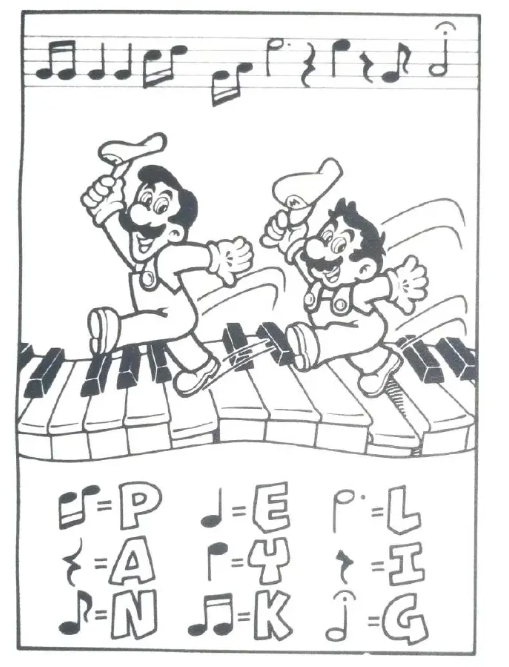
Splits: page 19 (everyone run for it), page 76 (keep playing)
Path: from page 56
Puzzle solution: The message will say ‘keep playing', so go to seventy-six.
Page 92 Chapter 47: ‘Grumbling and tired’ they keep aimlessly wandering around.
Splits: page 7
Path: from page 58, page 7
Page 93 Chapter 48: Everything is buried under coins or in ruin. Ludwig as it turns out was deaf all along or something before Peach does a skill shot with a basketball to knock him out. She sheds the sneakers and finally she’s over it. Also, they gain a bunch of coins.
Game Over (Win)
Reward: four hundred coins
Path: from page 76
Page 96 Chapter 49: The Marios head to the shoe vault lead by Toad until commotion means he has to scram. The brothers proceed to immediately tick off some implied to be capable mushroom guards so they are truly on their own. They find a locked door, use the puzzle.
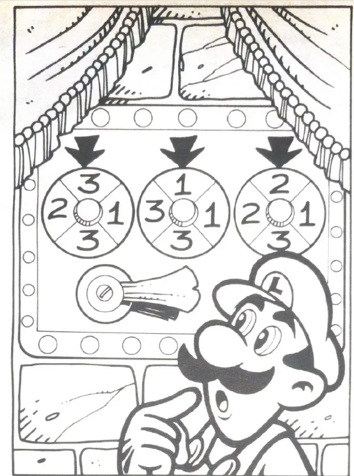
Reward: Basketball
Splits: page 22 (combination two-one-two), page 34 (combination two-three-two)
Path: from page 50, page 112
Puzzle solution: Go to page thirty-four so the combo is ‘two-three-two’. You also obtain a basketball here, not a necessary item but it takes the guessing game out of a later puzzle.
Page 100 Chapter 50: ‘Geronimo’ and right into a piranha plant’s mouth!
Game over
Path: from page 7
Page 101 Chapter 51: The wading boots do some little tricks like summoning water and guppies but that doesn’t help. They belong to Peach’s uncle Count Morrelli, the wrong person.
Splits: page 42
Path: from page 120
Page 103 Chapter 52: The shoe vault has laser security. After almost being blasted they reach an elevator with three different levers to guess at using the puzzle.
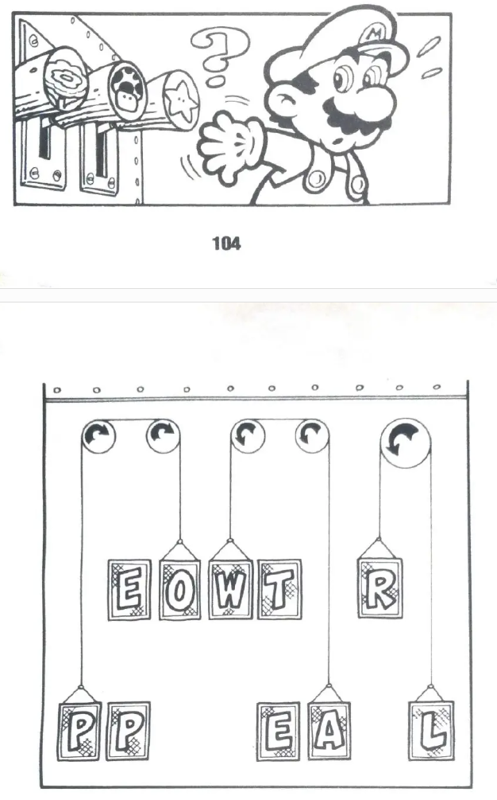
Splits: page 9 (pull flower lever), page 33 (pull mushroom lever), page 73 (pull star lever)
Path: from page 34
Puzzle solution: Look at the wheels to determine how the blocks with letters on them will move. It will say ‘petal power’ so pull the flower on page nine for a reward. The mushroom is a dead end and the star option is just progress.
Page 106 Chapter 53: Mario picks the wading boots whose label has been obscured by chewing gum. Move on.
Reward: wading boots
Splits: page 62
Path: from page 36
Puzzle solution: I wonder if that bit about the label is a nudge that you've just.. well you'll see.
Page 108 Chapter 54: Luigi uses the basketball to map out how the pipes connect, saving a lot of trouble. You lose the ball actually because something eats it though the score doesn’t reflect that.
Buffet: (uncredited) lose basketball
Splits: page 39
Path: from page 7
Page 110 Chapter 55: The cowboy boots step on their own in time with the music before bailing on everyone, at least seemingly.
Split: page 42
Path: from page 120
Puzzle solution: This had me going the first time I read though this. Keep going.
Page 111 Chapter 56: Ludwig keeps them at bay yet again with the pipe organ. A low note makes a bunch of items shower the plumbers. You know where this is going..
Splits: page 65
Path: from page 60
Page 112 Chapter 57: The brothers head to the shoe vault so hastily they trip each other up and fall down hill.
Buffet: Lose noise maker and/or balloon
Splits: Page 96
Path: from page 86, page 68, page 5
Puzzle solution: Not a game breaker at this point but still a needless loss.
Page 114 Chapter 58: Mario give away either the noisemaker or the boots (but hopefully not the boots) which works and they can get past the monster.
Buffet: lose the noisemaker or boots
Split: page 58
Path: from page 62
Page 115 Chapter 59: They dodge the birds but lose the music and the princess. Soon they find some tracks and a group of rocks. Which to check out?
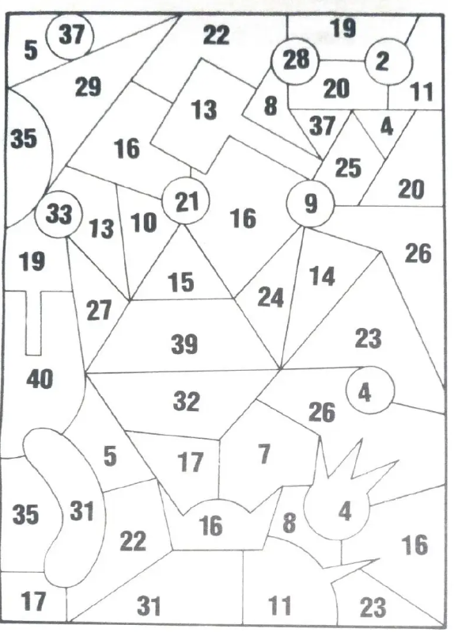
Splits: page 68 (follow trail thru desert), page 79 (check out group of rocks)
Path: from page 13
Puzzle solution: If you color in the shapes with numbers divisible by three, you will find a crown, which tells you that Peach is among the rocks. Go to page seventy-nine. The other has hazards.
Page 118 Chapter 60: Luigi hands over a green balloon that’s promptly popped by the Clawgrip. Someone's not afraid of clowns.
Buffet: lose balloon
Splits: page 12
Path: from page 62
Puzzle solution: Have a few coins.
Page 119 Chapter 61: The fight happens with them tumbling all over the keys and whatnot.
Splits: page 76
Path: from page 66
Page 120 Chapter 62: The brothers break out the boots and hopefully you have the right ones.
Split: page 110 (cowboy boots), page 101 (wading boots), page 8 (army boots)
Path: from page 28
Puzzle solution: Unleash the cowboy boots. If you don’t have them, use what you got and brace yourself.
Summary and conclusions:
This was the first Nintendo Adventure Book I’d purchased specifically to write a guide on, and I’m glad I did. The themes are a hodgepodge, music, dancing, shoes, and basketball? Bizarre, but it works. There aren’t a ton of areas to explore or enemy encounters, but the Mario bros play well off of each other and keep the pacing up. Many puzzles are based on music or sports.. and gears.. and logic. Very few are chance based. Pipe Down! understands the assignment when it comes to the CYOA thing. This is a structured adventure with plenty of detours, always leading back to common paths and no circular loops. My biggest gripe is how they handle the boots. Only at end of the princess chase (which turns out to be a shaggy dog route funnily enough) can you learn WHICH boots you need without guessing. You can use the wrong ones and survive, but say goodbye to the score.. Or that's what I'm sure they meant. In reality the threshold for the high score is surpassed just from reaching the last page, no matter how you did prior.
Otherwise items and pathing is given more than the usual attention for the series. You might get out of a situation more easily, without penalty, or get saved after making a mistake. Some bad paths pad it out a little before sending you to the game over. Villainous Ludwig Von Koopa has his personality and quirks incorporated into his master plan. It's no mystery he's behind it, but they try to foreshadow it anyway. He's menacing and brutal if you play badly, so don't. The bugged score is disappointing, but I loved this book regardless. Yeah I'm a bit biased too with the Ludwig part. So, Pipe Down! isn't perfect, but it was fun, well written, weird in the right ways, and decently structured. 5/5
Optimal Path:
Going for maximum score for a change:
START Page 1 (ten coins, noisemaker)- 50- 96 (basketball)- 34- 103- 9 (one-hundred coins, Starman)- 73- 88 (five coins)- 36- 26 (cowboy boots)- 62- 114 (lose noisemaker)- 58- 92- 7- 39 (forty-two coins)- 28- 120- 110- 42- 55- 77- 56- 90- 76- 93 (four-hundred coins) END.
Your score will be five hundred seventy coins, for a score of five-thousand five hundred and seventy, ie: “Supercharged Koopa-Catching Power Plumber”.
Some explanations of my path:
- The basketball is never used because we know which way to go at one point. Same for the Starman because we avoid the ‘worser’ path that requires it.
- It is impossible to avoid a ‘buffet’ or penalty in this book. You will have to give the Clawgrip something on page one-hundred fourteen, whether it’s the otherwise useless party favors, boots, or money. (By the way, you can't hold all of the items at once like in some books. You'd need to reset at a point and wipe the inventory, and no matter what you can't reobtain the party favors you missed.)
- We suspend the desert chase with the princess because we don't need the hint and it gives us no points. The score page hints encourages this however for obvious reasons.
Item Locations:
- Wading boots: page 106
- Basketball: page 96
- Army boots: page 48
- Starman: page 9
- Cowboy boots: page 26
- Noise maker: page 1
- Balloon: page 1
Puzzle analysis: There are nineteen puzzles in the book. Five are ‘logic’, four ‘decipher’, two ‘get a ruler’, two ‘matching’, one 'decipher/math', one ‘word search’, 'one maze/logic', one ‘maze’, one ‘get a ruler’/decipher, one 'other' type puzzle. As mentioned before, the puzzles stick to themes well overall, but fall victim to a few issues. Some need some more clear instructions or other courtesies like a word bank. Other than that it’s solid.
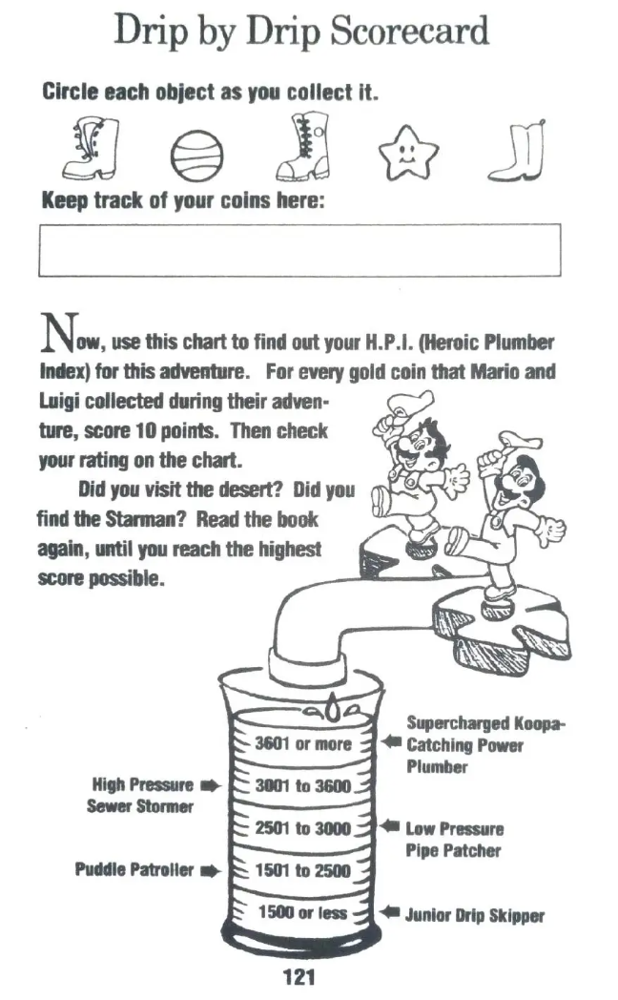
Book goals:
-Did you visit the desert: This is how you actually track down Peach, not skip any story, and know what boots to use.
-Find the Starman: This item can save you on some pages, but our optimal path doesn’t need it because we make no mistakes. That’s all the hints we get.
Last edit: 2/20/20, 11/14/20, 11/16/21, 12/30/23
Redone: 10/6/26